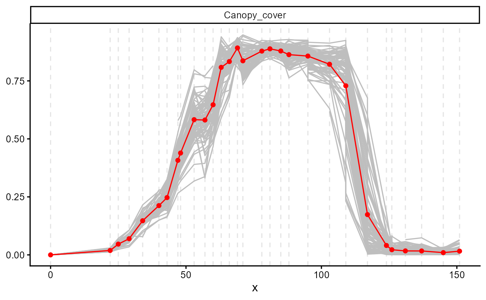

Soybean canopy cover from HTP platform (Keller et all., 2026)
Source:R/00_dt_potato.R
dt_soybean_22.RdCanopy cover time series for 78 soybean plots grown at the ETH Zurich Field Phenotyping Platform (FIP) site in Eschikon, Switzerland, during the 2022 season. Canopy cover was derived from high-throughput field images and is expressed as the fraction of ground covered by the crop.
Format
A tibble with 2,793 rows and 7 variables:
- location
Character. Trial site. Always
"Eschikon".- Year
Numeric. Growing season. Always
2022.- sowing_date
Date. Date of sowing (
2022-04-21).- harvest_date
Date. Date of harvest (
2022-09-23).- plot.UID
Character. Unique plot identifier, 78 levels.
- time_since_sowing
Numeric. Days elapsed since sowing, ranging from 0 to 151 over 30 measurement dates.
- Canopy_cover
Numeric. Fraction of ground covered by the canopy, ranging from 0 to 0.95. Contains 59 missing values.
Source
Derived from the Soybean_CanopyCover_data.csv file of the FIP 1.0
soybean data collection, subset to the 2022 season:
https://www.research-collection.ethz.ch/entities/researchdata/2f3b96fb-7d41-4851-ae72-3781a3df2e8f
Details
Every plot includes an anchor observation at time_since_sowing = 0
with Canopy_cover = 0, added with
series_mutate(add_zero = TRUE) when the dataset was assembled.
References
Keller, B., Kirchgessner, N., Oppliger, C., Kronenberg, L., Roth, L., Zumsteg, O., Corrado, S., Liebisch, F., Aasen, H., Storni, N., Tschurr, F., Zellweger, H., Betrix, C. A., Barendregt, C., Hund, A., & Walter, A. (2026). FIP 1.0 soybean data: Insights on soybean growth from eight years of high-throughput image field phenotyping. Scientific Data, 13(1), 476. doi:10.1038/s41597-026-06663-z
Examples
library(flexFitR)
data(dt_soybean_22)
head(dt_soybean_22)
#> # A tibble: 6 × 7
#> location Year sowing_date harvest_date plot.UID time_since_sowing
#> <chr> <dbl> <date> <date> <chr> <dbl>
#> 1 Eschikon 2022 2022-04-21 2022-09-23 FPSB0160001 0
#> 2 Eschikon 2022 2022-04-21 2022-09-23 FPSB0160001 22
#> 3 Eschikon 2022 2022-04-21 2022-09-23 FPSB0160001 25
#> 4 Eschikon 2022 2022-04-21 2022-09-23 FPSB0160001 29
#> 5 Eschikon 2022 2022-04-21 2022-09-23 FPSB0160001 34
#> 6 Eschikon 2022 2022-04-21 2022-09-23 FPSB0160001 40
#> # ℹ 1 more variable: Canopy_cover <dbl>
# Temporal evolution of all plots
explorer(dt_soybean_22, x = time_since_sowing, y = Canopy_cover, id = plot.UID) |>
plot(type = "evolution", add_avg = TRUE)
#> Warning: Removed 32 rows containing missing values or values outside the scale range
#> (`geom_line()`).
